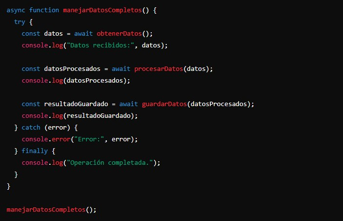

async y await nos permiten escribir funciones asincrónicas de manera más legible y manejable. Simplifican el uso de promesas y eliminan la necesidad de encadenar múltiples then y catch.
- async:
La palabra clave async se usa para declarar una función asincrónica. Una función declarada con async siempre devuelve una promesa. Si la función devuelve un valor, la promesa se resolverá con ese valor. Si la función lanza una excepción, la promesa se rechazará con el valor de esa excepción.
Ejemplo:
- await:
La palabra clave await se usa dentro de una función async para esperar a que una promesa se resuelva. await detiene la ejecución de la función async hasta que la promesa se resuelva o rechace, y luego reanuda la ejecución de la función con el valor resuelto de la promesa.
Ejemplo:
Legibilidad: El código es más fácil de leer y entender, similar al código sincrónico.
Manejo de errores: Se puede usar try y catch para manejar errores de manera más clara.
Eliminación del encadenamiento: Simplifica el manejo de múltiples promesas sin necesidad de encadenar múltiples then y catch.
Ventajas de async y await:
Ejemplo: Supongamos que queremos obtener datos de un servidor, procesarlos y luego mostrarlos. Con async y await, podemos escribir el código de manera clara y sencilla.
Así se escribiría el código con la promesa:
Y así se escribiría el código con async y await:
Uso avanzado de async y await
- Ejecutar promesas en paralelo:
Podemos usar Promise.all con await para ejecutar múltiples promesas en paralelo y esperar a que todas se resuelvan.
- Retornos anticipados:
Si necesitamos salir anticipadamente de una función async, simplemente podemos devolver un valor.
async: Declara una función asincrónica que devuelve una promesa.
await: Pausa la ejecución de una función async hasta que la promesa se resuelva o rechace.
Legibilidad: Hace que el código asincrónico sea más fácil de leer y escribir.
Manejo de errores: Permite usar try y catch para manejar errores de manera clara.
En resumen:
Ejemplo: Supongamos que queremos obtener datos de un servidor, procesarlos, y luego guardar los datos procesados en otro lugar. Todo esto debe hacerse de manera asincrónica y ordenada.
